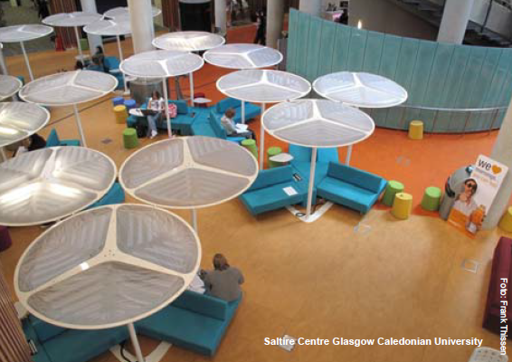

Bármely hely válhat tanulási térré, hiszen a tanulás bármilyen helyszínen kivitelezhető, így megkülönböztethetünk formális és informális tanulási tereket. A formális tanulási terek az osztálytermeket jelentik, míg az informális tanulási terek jellemzőek például olyan közösségi kulturális helyszíneken, mint a múzeumok vagy a könyvtárak.

A tér szerkezete hatással van az ott folyó kommunikációra, a tanulási folyamatban alkalmazott munkaformákra, az órák hangulatára. (Hercz–Sántha 2009:83) Ennek jegyében Humphrey Osmond (1959) angol pszichiáter környezetpszichológiával foglalkozó tanulmányában megkülönböztetett szociopetális és szociofugális tereket. A szociopetális terek támogatják az ott tartózkodó csoportot, közösséget, míg a szociofugális terek károsan, rombolóan hatnak a csoport tevékenységeire.
Nádori–Prievara tanulmányában (2018) szintén foglalkozik a különböző tanulási terek csoportosításával. Véleményük szerint az újgenerációs tanulási tereknek alapvetően négy fajtája van, melyeknek metaforikus neveket adtak: amfiteátrum, tábortűz, itató és barlang. A négy típus elsősorban abban különbözik, hogy mely munkaformák és feladatok elvégzéséhez optimális.
Az amfiteátrum-típusú tanulási terek a klasszikus, egyelőadós munkaformát támogatják, ahol tipikus a frontális osztálymunka. Amiben mégis eltér a hagyományos osztálytermektől az az, hogy a tér flexibilis, azaz könnyen változtatható bútorokkal van felszerelve, így lehetővé teszi akár a lépcsőzetes, akár az U-alakú/C-alakú elrendezést. Optimális lehet filmvetítésekhez, bemutatókhoz. A tanulók figyelme egy pontra koncentrál.
A tábortűz-típusú tanulási terek átmenetet képeznek a frontális és a csoportmunkát támogató terek között, ugyanis a diákok nem egymás mellett, hanem csoportokban ülnek. Az asztalok nagyon közel vannak egymáshoz, így az egész közösség egyként is jelen van a térben. Ebből kifolyólag lehetőség nyílik előadások tartására, de a csoportprojektek megvitatására is.
Műhelymunkák tipikus helyszíne az itató-típusú tanulási tér. A tanulók egy nagy közös terület (pl. asztal vagy elkerített rész a padlón4, szőnyegen) mentén dolgoznak/tanulnak saját tempójuk és elképzelésük szerint. A közösség részeként tevékenykednek, de egyéni produktumot hoznak létre, egyéni munkaformákkal. A tanulók figyelme a közösen végzett feladatokra koncentrál a kooperatív tanulás jegyében.
Az egyéni elmélyülés helyszíne a barlang-típusú tanulási tér. Intim terekként kell elképzelnünk, ahol a tanulók egyénileg vannak jelen, fontosak a félig/részben elhatároló térelemek, melyek a zavartalan tanulás alappillérei.
A valóságban azonban gyakran találkozunk azzal, hogy ezek a tértípusok vegyesen jelennek meg, ahol a tér belső elrendezése lehetővé teszi, hogy változatos munkaformákat is támogasson. Egy német középiskolában (Alemannenschule, Wutöschingen) sajátos módon zajlik a tanulás, a diákok nem osztályokban és osztálytermekben tanulnak, hanem a munkaforma és a téma dönti el a csoport összetételét és a tanulás helyszínét. A hangsúly az egyéni fejlődésen és tanuláson van, amelyhez támogatólag járul hozzá a csoportban végzett munka, a csoportban való tanulás. Ebben az iskolában háromféle tanulási tér található: inputszoba, piactér, alkotótér.
Az inputszobák kisméretűek, zártterűek és arra szolgálnak, hogy az ismeretszerzés első fázisában az adott téma alapjait a diákok elsajátítsák, illetve nagyobb létszámú csoportmunkához kapcsolódó feladatokat tudjanak itt elvégezni. Alkalmas ugyanakkor előadások, bemutatók tartására is. A tábortűz-típusú tanulási terekhez áll a legközelebb.
A piactéren az itató-típusú tereknél jellemző kooperatív tanulás áll a középpontban. Ezeknek a közepes méretű helyiségeknek az alaprajza, a bútorzata és az elválasztó elemek (pl. térelválasztó, függöny) mind azt segítik elő, hogy a tér könnyen átrendezhető legyen, és ún. tanulási szigeteket lehessen benne kialakítani. Kitűnően alkalmas ezért ez a tanulási tér a páros vagy kiscsoportos feladatok elvégzésére. A bútorzatnál szintén változatosságot tapasztalunk, kényelmes kanapék, fotelek ugyanúgy megtalálhatók, mint számítógépek.
Nyitott, tágas és több oldalról megközelíthető tanulási helyszín. Emeletes terek kerültek itt kialakításra, mely egyszerre alkalmas kiscsoportos vagy egyéni munkaformákhoz, illetve bemutatókhoz. Itt mindenkinek van saját helye, ahol otthonosan érezheti magát a saját íróasztalánál. A nagysága ellenére viszonylag csendes, hasonló a közege a könyvtárakéhoz. Nyugodt, elmélyült munkát kiválóan támogatja, de külső segítség igénybevételéhez is remek közeg.
Irodalom:
Byers, T. – Imms, W. – Hartnell-Young, E. 2014. Making the case for space: The effect of learning spaces on teaching and learning. In: Curriculum and Teaching, 29 (1), pp. 5-9.
Chism, Van Note N. – Bickford, D. J. eds. 2002. The importance of physical space in creating supportive learning environments. New Direction in Teaching and Learning, 92 (Winter 2002), San Fransisco, Jossey-Bass.
Chism, Van Note N. 2006. Challenging traditional assumptions and rethinking learning spaces. In: Oblinger, D. (ed.) 2006. Learning spaces. Educause. Available at: http://www.educause.edu/learningspaces
Hercz Mária – Sántha Kálmán 2009. Pedagógiai terek iskolai implementációja. Architektúra és funkcionális terek a mindennapok pedagógiai világában. In: Iskolakultúra 9. pp. 78-94.
Graetz K. A. – Goliber, M. J.
Graetz, K. A. 2006. The psychology of learning environments. In: Oblinger, D. (ed.) 2006 Learning spaces. Educause. Available at: http://www.educause.edu/learningspaces
Les Watson 2006. Designing space for effective learning: A guide to 21st century learning space design. Higher Education Funding Council for England, Bristol, p 24.
Nádori Gergely – Prievera Tibor 2018. 21. századi pedagógia. Akadémiai Kiadó, Budapest.
Oblinger, Diana G. (ed.) 2006. Learning spaces (E-book). Educause. Available at: http://www.educause.edu/learningspaces
Osmond, H. 1957. "Function as the Basis of Psychiatric Ward Design". In: Mental Hospitals. American Psychiatric Association: 23–29. Retrieved 2014-02-14
Rittelmeyer, C. 1986. Zur pädagogischen Beurteilung der Schulbau-Architektur. In: Baumeister, 2. pp. 64-69.
Sántha Kálmán 2018. Vizuális Grounded Theory a pedagógiai terek értelmezésében. In: Neveléstudomány 4. pp.52-67.
Stang, Richard 2019. Designing learning spaces. International Summerschool for Librarians 2019. Module „Learning spaces – Ways to support learning. Hochschule der Medien Stuttgart, 2019.09.16-18.
Strange, C. C. – Banning, J. H. 2002. Educating by design: Creating campus learning environments that work. Jossey-Bass, San Fransisco.
Watson, L. 2006. Designing spaces for effective learning. A guide to 21st century learning space design. JISC, Bristol.